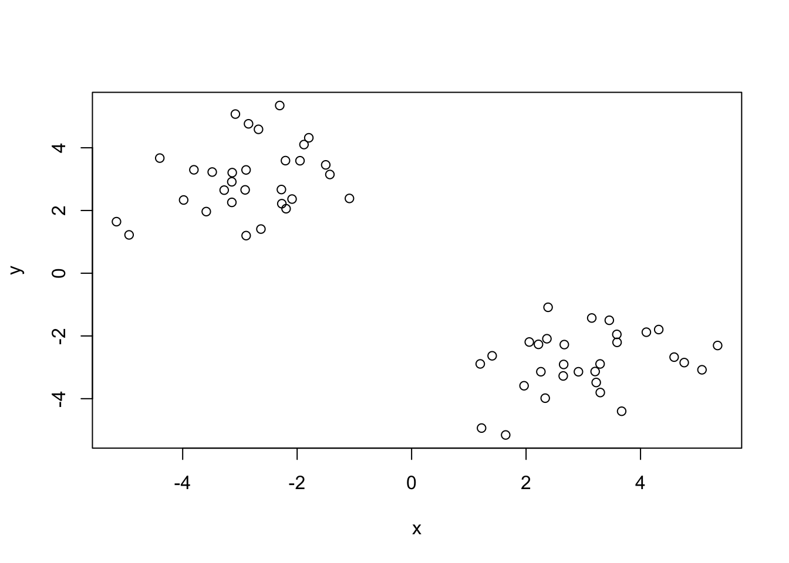
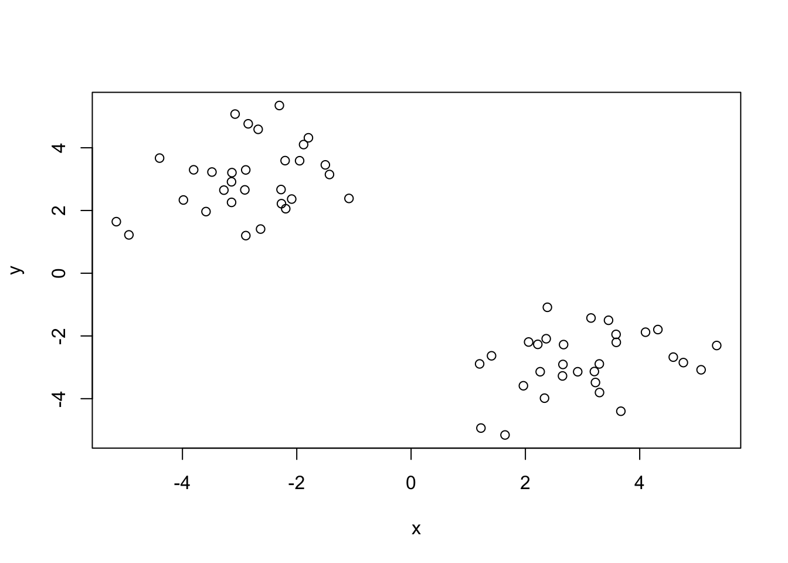
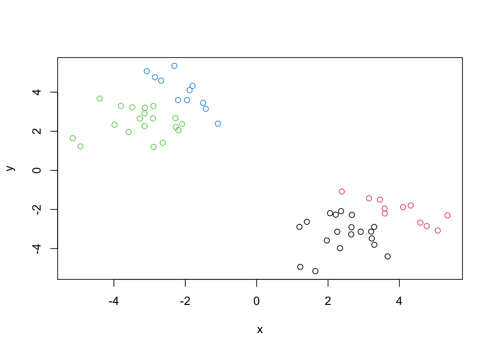
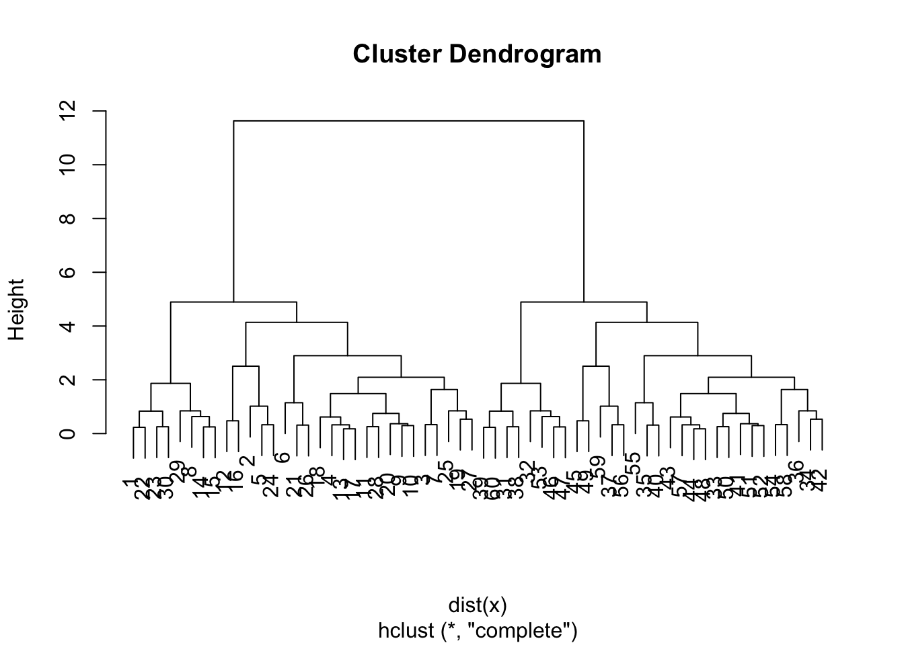
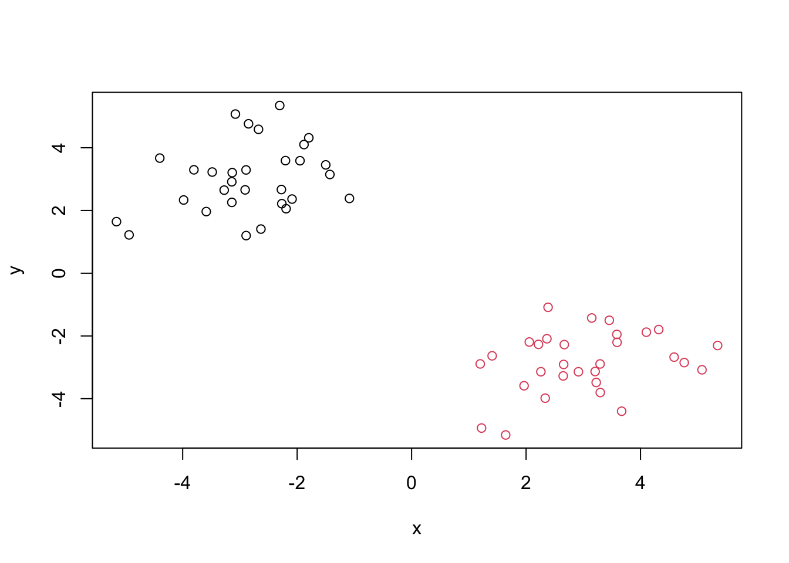
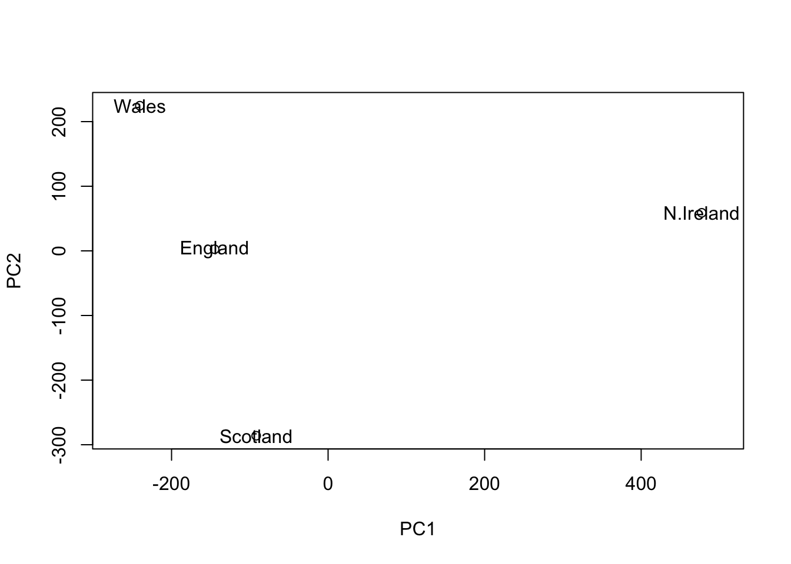
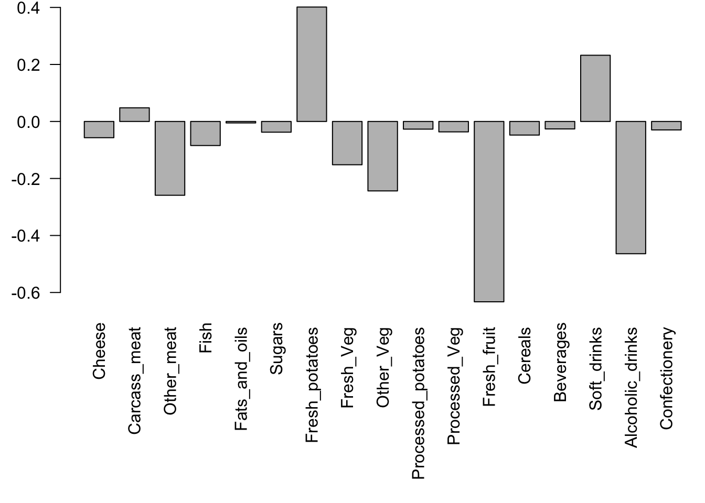

tmp <- c(rnorm(30,-3),rnorm(30,3))
x <- cbind(x=tmp,y=rev(tmp))
plot(x)
tmp <- c(rnorm(30,-3),rnorm(30,3))
x <- cbind(x=tmp,y=rev(tmp))
plot(x)
km <- kmeans(x,centers=4,nstart=20)
kmK-means clustering with 4 clusters of sizes 19, 11, 19, 11
Cluster means:
x y
1 2.434173 -3.273427
2 4.032128 -2.068477
3 -3.273427 2.434173
4 -2.068477 4.032128
Clustering vector:
[1] 4 3 3 3 3 4 3 4 3 3 3 3 3 4 4 3 3 3 3 3 4 4 4 3 3 4 3 3 4 4 2 2 1 1 2 1 1 2
[39] 2 2 1 1 1 1 1 2 2 1 1 1 1 1 2 1 2 1 1 1 1 2
Within cluster sum of squares by cluster:
[1] 23.72283 11.86315 23.72283 11.86315
(between_SS / total_SS = 93.8 %)
Available components:
[1] "cluster" "centers" "totss" "withinss" "tot.withinss"
[6] "betweenss" "size" "iter" "ifault" km$size[1] 19 11 19 11km$cluster [1] 4 3 3 3 3 4 3 4 3 3 3 3 3 4 4 3 3 3 3 3 4 4 4 3 3 4 3 3 4 4 2 2 1 1 2 1 1 2
[39] 2 2 1 1 1 1 1 2 2 1 1 1 1 1 2 1 2 1 1 1 1 2km$centers x y
1 2.434173 -3.273427
2 4.032128 -2.068477
3 -3.273427 2.434173
4 -2.068477 4.032128plot(x,col=km$cluster)
points(km$centers,col=km$clusters,pch=15,cex=2)
#rep(x,y) repeat membership x for y timeshc <- hclust(dist(x))
hc
Call:
hclust(d = dist(x))
Cluster method : complete
Distance : euclidean
Number of objects: 60 plot(hc)
cutree(hc,h=8) [1] 1 1 1 1 1 1 1 1 1 1 1 1 1 1 1 1 1 1 1 1 1 1 1 1 1 1 1 1 1 1 2 2 2 2 2 2 2 2
[39] 2 2 2 2 2 2 2 2 2 2 2 2 2 2 2 2 2 2 2 2 2 2grsp <- cutree(hc,k=2)
grsp [1] 1 1 1 1 1 1 1 1 1 1 1 1 1 1 1 1 1 1 1 1 1 1 1 1 1 1 1 1 1 1 2 2 2 2 2 2 2 2
[39] 2 2 2 2 2 2 2 2 2 2 2 2 2 2 2 2 2 2 2 2 2 2plot(x,col=grsp)
#Principal Component Analysis (PCA)
Q2. Which approach to solving the ‘row-names problem’ mentioned above do you prefer and why? Is one approach more robust than another under certain circumstances?
url <- "https://tinyurl.com/UK-foods"
x <- read.csv(url,row.names=1)head(x) England Wales Scotland N.Ireland
Cheese 105 103 103 66
Carcass_meat 245 227 242 267
Other_meat 685 803 750 586
Fish 147 160 122 93
Fats_and_oils 193 235 184 209
Sugars 156 175 147 139#rownames(x) <- x[,1]
#x <- x[,-1]
#xQ1. How many rows and columns are in your new data frame named x? What R functions could you use to answer this questions?
dim(x)[1] 17 4Q3: Changing what optional argument in the above barplot() function results in the following plot?
barplot(as.matrix(x),col=rainbow(nrow(x)))
Q5: Generating all pairwise plots may help somewhat. Can you make sense of the following code and resulting figure? What does it mean if a given point lies on the diagonal for a given plot?
pairs(x, col=rainbow(10), pch=16)
Q6. What is the main differences between N. Ireland and the other countries of the UK in terms of this data-set?
#prcomp expects the transpose of the data input
pca <- prcomp(t(x))
summary(pca)Importance of components:
PC1 PC2 PC3 PC4
Standard deviation 324.1502 212.7478 73.87622 4.189e-14
Proportion of Variance 0.6744 0.2905 0.03503 0.000e+00
Cumulative Proportion 0.6744 0.9650 1.00000 1.000e+00Q7. Complete the code below to generate a plot of PC1 vs PC2. The second line adds text labels over the data points.
plot(pca$x[,1], pca$x[,2], xlab="PC1", ylab="PC2", xlim=c(-270,500))
text(pca$x[,1], pca$x[,2], colnames(x))
Q8. Customize your plot so that the colors of the country names match the colors in our UK and Ireland map and table at start of this document.
plot(pca$x[,1], pca$x[,2], xlab="PC1", ylab="PC2", xlim=c(-270,500))
text(pca$x[,1], pca$x[,2], colnames(x),col=c("orange","red", "blue","darkgreen"))
par(mar=c(10, 3, 0.35, 0))
barplot(pca$rotation[,1], las=2)
Q9: Generate a similar ‘loadings plot’ for PC2. What two food groups feature prominantely and what does PC2 maninly tell us about?
par(mar=c(10, 3, 0.35, 0))
barplot(pca$rotation[,2], las=2)
biplot(pca)